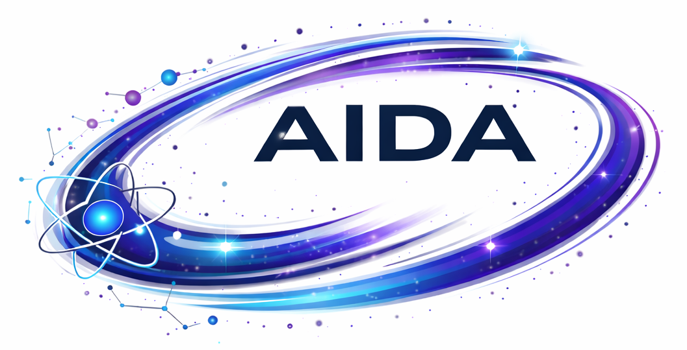
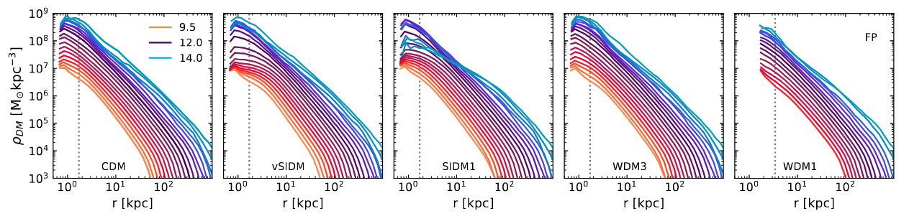
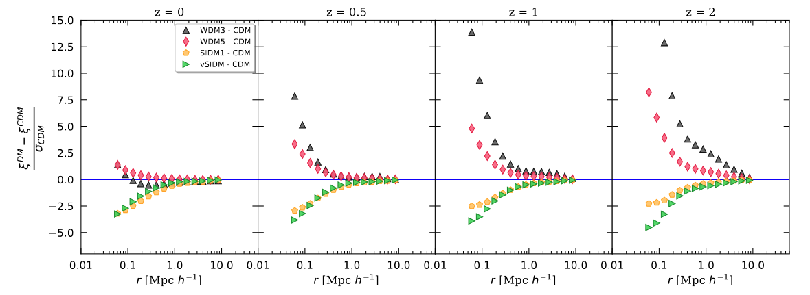
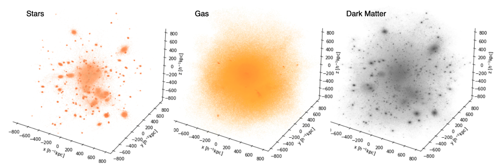
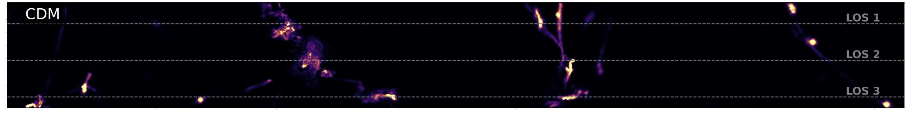
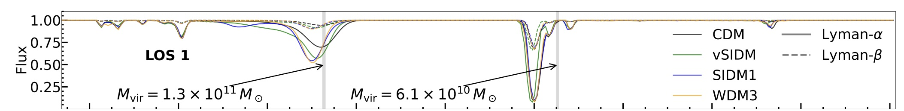

Presentation paper:
Introducing the AIDA-TNG project: galaxy formation in alternative dark matter models
- Giulia Despali, Lauro Moscardini, Dylan Nelson, Annalisa Pillepich, Volker Springel, Mark Vogelsberger published in A&AAbstract: We introduce the AIDA-TNG project, a suite of cosmological magnetohydrodynamic simulations that simultaneously model galaxy formation and different variations of the underlying dark matter model. We consider the standard cold dark matter model and five variations, including three warm dark matter scenarios and two self-interacting models with constant or velocity-dependent cross-section. In each model, we simulate two cosmological boxes of 51.7 and 110.7 Mpc on a side, with the same initial conditions as TNG50 and TNG100, and combine the variations in the physics of dark matter with the fiducial IllustrisTNG galaxy formation model. The AIDA-TNG runs are thus ideal for studying the simultaneous effect of baryons and alternative dark matter models on observable properties of galaxies and large-scale structures. We resolve haloes in the range between 108 and 4x1014 solar masses and scales down to the nominal resolution of 570 pc in the highest resolution runs. This work presents the first results on statistical quantities such as the halo mass function and the matter power spectrum; we quantify the modification in the number of haloes and the power on scales smaller than 1 Mpc, due to the combination of baryonic and dark matter physics. Despite being calibrated on cold dark matter, we find that the TNG galaxy formation model can produce a realistic galaxy population in all scenarios. The stellar and gas mass fraction, stellar mass function, black hole mass as a function of stellar mass and star formation rate density are very similar in all dark matter models, with some deviations only in the most extreme warm dark matter model. Finally, we also quantify changes in halo structure due to warm and self-interacting dark matter, which appear in the density profiles, concentration-mass relation and galaxy sizes.
Other papers:
(1) The AIDA-TNG project: dark matter profiles and concentrations in alternative dark matter models
- Giulia Despali, Carlo Giocoli, Lauro Moscardini, Annalisa Pillepich, Mark Vogelsberger, Massimo Meneghetti published in A&AAbstract: In the standard Cold Dark Matter (CDM) scenario, the density profiles of dark matter haloes are well described by analytical models linking their concentration to halo mass. Alternative scenarios, such as warm dark matter (WDM) and self-interacting dark matter (SIDM), modify the inner structure of haloes and predict different profile shapes and central slopes. We employ the AIDA-TNG simulations to investigate how alternative dark matter physics and baryonic processes jointly shape the internal structure of haloes. Using dark-matter-only and full-physics runs, we measure the dark matter density profiles of haloes spanning six orders of magnitude in mass, from 109.5 Msun to 1014.5Msun, considering radial bins that are well-resolved above. We fit the profiles with multiple analytical models and provide the distribution of the best-fitting parameters, as well as the concentration-mass relation in WDM and SIDM. The Einasto profile well reproduces the inner flattening produced in WDM models, both in the collisionless and in the full-physics runs. In SIDM dark-matter-only runs, haloes are better described by explicitly cored profiles, with core sizes that depend on mass and on the self-interaction model. When baryons are included, the differences between CDM and SIDM decrease, and such large dark-matter cores no longer form because adiabatic contraction in the baryon-dominated region counteracts self-interactions. Nevertheless, the coupling between baryons and self-interactions induces a broader range of inner slopes, including cases that are steeper than CDM at Milky Way masses. Alternative dark matter physics thus leaves clear signatures in the inner halo structure, even if baryons significantly reshape these differences. Our results are useful for future studies that need to predict the properties of haloes in multiple dark matter models.

(2) The AIDA-TNG project: abundance, radial distribution, and clustering properties of halos in alternative dark matter models
- Massimiliano Romanello, Giulia Despali, Federico Marulli, Carlo Giocoli, Lauro Moscardini published in A&AAbstract: Warm and self-interactive dark matter cosmologies have been proposed as non-baryonic solutions to the tensions between the $\Lambda$ Cold Dark Matter model and observations at the kpc scale. In this paper, we use the dark matter-only runs of the \textsc{aida-tng} project, a set of cosmological simulations of different sizes and resolutions, to analyze the macroscopic impact of alternative dark matter models on the abundance, the radial distribution and the clustering properties of halos. We adopt the halo occupation distribution formalism to characterize the evolution of its parameters $M_1$ and $\alpha$ with the mass and redshift selection of our sample. By dividing the halo population into central and satellites, we are able to study their spatial density profile, finding that a Navarro-Frenk-White model is not accurate enough to describe the radial distribution of subhalos, and that a generalized Navarro-Frenk-White model is required instead. Warm dark matter models, in particular, present a cuspier distribution of satellites, whereas self-interacting dark matter exhibits a shallower density profile. Moreover, we find that the small-scale clustering of dark matter halos provides a powerful tool to discriminate between alternative dark matter scenarios, in preparation for a more detailed study that fully incorporates baryonic effects, and for a comparison with observational data from galaxy clustering.

(3) The AIDA-TNG project: 3D halo shapes
- Carlo Giocoli, Giulia Despali, Lauro Moscardini, Massimo Meneghetti, Ravi Sheth, Annalisa Pillepich, Mark Vogelsberger published in A&AAbstract: The shapes of dark matter halos can be used to constrain the fundamental properties of dark matter. In standard Cold Dark Matter (CDM) cosmologies, halos are typically triaxial, with a preference for prolate configurations, particularly at low masses and high redshift. We focus on the characterization of total matter 3D shape in alternative dark matter models, such as Self-Interacting Dark Matter (SIDM) and Warm Dark Matter (WDM). These scenarios predict different structural properties due to collisional effects or the suppression of small-scale power. We measure the different halo component shapes -- dark matter, stars and gas -- at various radii from the center in the AIDA-TNG (Alternative Interacting Dark Matter and Astrophysics – TNG), which is a suite of high-resolution cosmological simulations built upon the IllustrisTNG framework. The intent is to systematically study how different dark matter models -- specifically, SIDM and WDM -- affect galaxy formation and the structure of dark matter halos, when realistic baryonic physics is also included. SIDM models tend to produce rounder and more isotropic halos, especially in the inner regions, as a result of momentum exchange between dark matter particles. WDM halos are also slightly more spherical than their CDM counterparts, and are typically less concentrated. In all cases, the inclusion of self-consistent baryonic physics makes the central regions of all halos rounder, while still revealing clear distinctions among the various dark matter models. The general framework presented in this work,based on the 3D halo shape, can be useful to interpret multi-wavelength data analyses of galaxies and clusters.

(4) The AIDA-TNG project: gas distribution inside and around haloes
- Chi Zhang, Enrico Garaldi, Giulia Despali, Matteo Viel Lauro Moscardini, Mark Vogelsberger arXiv linkAbstract: The nature of Dark Matter (DM) is one of the most outstanding mysteries of modern astrophysics. While the standard Cold DM (CDM) model successfully explains observations on most astrophysical scales, DM particles have not yet been detected, leaving room for a plethora of different models. In order to identify their observable signatures, we use the AIDA-TNG cosmological simulation suite to predict the distributions of gas and neutral hydrogen (HI) in the CDM, Self-Interacting DM (SIDM), velocity-dependent SIDM (vSIDM), and Warm DM (WDM) models. We find that the DM models investigated have very limited impact on the median gas and HI profile of haloes. In particular, for the most massive haloes ( Mvir∼1014M⊙), we find that DM self-interactions can shallow the central potential and thereby enhance gas cooling. We find that, in all models, the halo-to-halo variation in the HI profiles is explained by AGN feedback, and that the specific characteristics of DM model is largely subdominant. Nevertheless, we detect some systematic difference in the case of SIDM, with more HI surviving close to the centre with respect to other models. We provide fitting functions for the gas and HI profiles. We investigate the galaxy-Ly α cross-correlation function for different halo masses, redshift and observation strategies. We find that at z=0 vSIDM can be distinguished from CDM in haloes with 1012≲Mvir≲1013M⊙, while SIDM1 can be distinguished from CDM in haloes with Mvir≳1013M⊙. We estimate that statistically-robust detection requires sampling ∼160 haloes with ∼20 sightlines each, a task that can be achieved with current and future facilities like WEAVE, 4MOST, PFS, ELT and WST.


(5) Galaxy and Halo Assembly Bias in Alternative Dark Matter Models
- Yikun Wang; Idit Zehavi; Sergio Contreras; Jonás Chaves-Montero; Giulia Despali; Carlo Giocoli; Lauro Moscardini; Massimiliano Romanello; Mark Vogelsberger arXiv linkAbstract: The clustering of dark matter halos depends not only on halo mass but also on secondary halo properties, a phenomenon known as halo assembly bias. Coupled with variations in halo occupation, this dependence impacts galaxy clustering, an effect termed galaxy assembly bias.While previous studies have found only weak cosmological dependence of assembly bias within the ΛCDM framework, its sensitivity to the underlying dark matter physics remains largely unexplored. We use the matched dark-matter-only and hydrodynamical simulations from the AIDA-TNG suite to measure assembly bias across four dark matter models: cold dark matter, warm dark matter, and self-interacting dark matter with constant cross-sections and velocity-dependent cross-sections. We find that at z = 0, halo assembly bias is nearly identical across the four models for concentration-selected halos, as is the concentration dependence of the halo occupation distribution. The resulting galaxy assembly bias signals likewise show only weak model dependence. For stellar-mass-selected galaxy samples with n=0.0586h3Mpc−3 at z = 0, the velocity-dependent self-interacting dark matter scenario exhibits the largest deviation from the fiducial cold dark matter model: its assembly bias contribution to galaxy clustering is enhanced by up to ∼6%, corresponding to a ∼3% difference in the assembly bias amplitude. Although statistically distinguishable, this difference is small and unlikely to be detected in current analyses. The weak model dependence persists across different galaxy number densities and redshifts. Overall, within the TNG galaxy-formation framework, these results indicate that assembly bias is largely insensitive to the dark matter models explored here, providing a robust baseline for future studies of the galaxy-halo connection in alternative dark matter scenarios.
Papers with AIDA contributions:
Lower central dark matter densities in nearby galaxies than predicted by simulations
- Yu Lei, Ling Zhu, Meng Yang, Giulia Despali, Zheng Zheng, Ran Li, Dandan Xu, Niankun Yu, Jesús Falcón-Barroso, Fangzhou Jiang, Glenn van de Ven, Jie Wang arXiv linkAbstract: Baryonic feedback in hydrodynamical simulations is typically invoked to alleviate the core-cusp problem in dwarf galaxies. Yet baryonic processes also induce adiabatic contraction of dark matter, producing overly steep density profiles and excessively high dark matter fractions in the inner regions of massive galaxies. The dark matter distribution of galaxies across a wide stellar-mass range is therefore a critical test for such simulations, but a comprehensive benchmark has remained absent. Here, we consistently measure the dark matter distribution from galaxy centres out to radii of 20--50 kpc for 136 nearby galaxies that together span the local mass-size relation over the stellar mass interval 109-1011.5M⊙. We identify central regions with lower dark matter densities relative to ΛCDM simulation expectations - whose extent grows from about 10 kpc to >50kpc as stellar mass increases from 1010M⊙ to 1011.5M⊙. Although their physical origin remains unclear, these low--dark matter regions are clearly indicated by the data. Our results provide an important observational benchmark for future hydrodynamical simulations that explore alternative dark matter models and feedback processes.